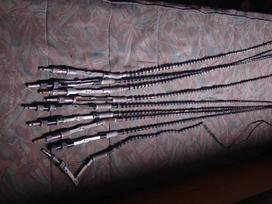

4G modemai, 4G antenos, 4G maršrutizatoriai | Antenos | 4G modemai, 4G antenos, 4G maršrutizatoriai

Informuojame, kad šioje svetainėje naudojami slapukai (angl. cookies). Paspaudę mygtuką „Sutinku“ arba naršydami toliau patvirtinsite savo sutikimą. Bet kada galėsite atšaukti savo sutikimą pakeisdami interneto naršyklės nustatymus ir ištrindami įrašytus slapukus. Susipažinkite su privatumo politika.
Prekių krepšelis tuščias
PRISTATYMAS LIETUVOJE 1-2 DARBO DIENOS
PROFESIONALIOS KONSULTACIJOS Jurijus +370-606-24534; Robertas +370-659-99212;
PATIKRINTOS ŽINOMŲ GAMINTOJŲ PREKĖS
SAUGUS ATSISKAITYMAS
MENIU Modemai Maršrutizatoriai Antenos Produktai Modemai Maršrutizatoriai Antenos Kontaktai Prekės pristatymas Prekės apmokėjimas Prėkės grąžinimas Kaip pirkti ? Titulinis AntenosProduktai
Modemai Maršrutizatoriai AntenosFiltras
Filtras
Žymės
Modemai Maršrutizatoriai Antenos Wi-Fi stiprintuvai Laidai, kabeliai Universalūs usb pakrovėjai Perėjimai, jungtysAntenos
-38% Daugiau3G - 4G ANTENA MARŠRUTIZATORIAMS KOMPLEKTAS 2 VNT
16,00 €sena kaina 26,00
Daugiau
4G/3G antena HUAWEI maršrutizatoriams Antena skirta vartotojams turinties Huawei maršrutizatorius su sma jungtimi. Šios antenos puiki...
-38% Daugiau3G - 4G antena maršrutizatoriams komplektas 2 vnt
16,00 €sena kaina 26,00
Daugiau
4G/3G antena HUAWEI maršrutizatoriams Antena skirta vartotojams turinties Huawei maršrutizatorius su sma jungtimi. Šios antenos puiki...
-25% Daugiau4G Vidinė Antena su magnetu 12dbi
15,00 €sena kaina 19,99
Daugiau
4G Vidinė Antena su magnetu 12dbi, laido ilgis 5m Skirta Huawei, Alcatel, ZTE ir kito gamintojo maršrutizatoriams, kuriuose yra sma pajungimas įšoriniai...
-22% Daugiau4G LTE ANTENA ISKRA P-30 LTE MIMO
69,00 €sena kaina 89,00
Daugiau
Antena skirta 4G ryšio gerinimui. Jos dėka galėsite pagerinti 4g ryšio kokybę, ypatingai naudinga gyvenantiems atokiau miesto, soduose, užmiestyje, kur yra silpnas...
DaugiauAntena LTE/GSM/3G/4G/LTE, su tvirtinimo elementu, 3.0dBi, 5m RG58, SMA kištukas
28,00 €Daugiau
Specifikacijos CELLULAR / LTE - 698-960 MHz - 1710-2170 MHz - 2500-2700 MHz Poliarizacija: Vertikali Stiprinimas: 3 dBi Galia: 100W Sieninis tvirtinimas:...
DaugiauCross MIMO Omni Dipol LTE Antena
53,00 €Daugiau
4G LTE antena, puikus sprendimas gyvenantiems atokiau miesto, soduose, užmiestyje, kur yra silpnas, nepakankamas ryšys. Universali antena tinka stiprinti 4G/3G/2G tinklus....
Naujiena DaugiauIskra P-58 L700 U-MIMO LTE
99,00 €Daugiau
Antenų rinkinys P-58 L700 UNI MiMo yra naudojamas mobiliųjų operatorių signalams priimti, naudojant „MiMo“ technologiją (dvi antenos, montuojamos sudarant X poliarizaciją)....
DaugiauMiniMag 6dBi GSM 3G 4G Antena
8,00 €Daugiau
Techniniai duomenys Dažnis: 890 - 960 MHz, 1710 - 2150, 2600-2670 MHz Laidas: RG-174, 3m Aukštis: 330 mm Jungtis: SMA m Svoris: 70g
-21% DaugiauOEM 3G/4G 9dBi Vidinė Dviguba Antena (TS9 3m)
31,50 €sena kaina 39,99
Daugiau
GSM 3G/4G LTE HSPA+ 9dBi Dviguba vidinė Omni Antena su TS9 jungtimi Profesionali omni dviguba antena su 9dBi stiprinimu, kuri dirba dažnių juostoje nuo 850 MHz - 2600MHz....
-21% DaugiauOEM 3G/4G LTE 9dBi Vidinė Dviguba Antena (SMA Male 3m)
31,50 €sena kaina 39,99
Daugiau
GSM 3G/4G LTE HSPA+ 9dBi Dviguba vidinė Omni Antena su SMA Male jungtimi Profesionali omni dviguba antena su 9dBi stiprinimu, kuri dirba dažnių juostoje nuo 850 MHz -...
-41% DaugiauOEM 3G/4G Vidinė Magnetinė Antena
13,62 €sena kaina 22,99
Daugiau
Techninė specifikacija 824~960/1710~2170MHz GSM Antena PREKĖS ŽENKLAS: OEM MODELIS: JCG016 EAN/UPC: 0708747434484 Dažnių juosta 824~960/1710~2170MHz...
-38% DaugiauOEM JCG017L 4G Vidinė Antena
9,32 €sena kaina 14,99
Daugiau
Techninė specifikacija 824~960/1710~2655 MHz GSM Antenna Prekės ženklas: OEM Modelis: JCG017L EAN/UPC: 0708747434866 Dažnių juosta...
DaugiauOmni Dipol LTE MIMO Antena
53,00 €Daugiau
Techniniai duomenys: Dažnis: 690 - 960/1710 - 2170 / 2400-2700MHz V.S.W.R: 2.2: 1 Laidas: CDF-195, 5m Jungtis: SMA m Aukštis: 250 mm
DaugiauOmni Dipol LTE Smart N Antena
42,00 €Daugiau
Techniniai duomenys: Dažnis: 690 - 960/1710 - 2170 / 2400-2700MHz V.S.W.R: 2.2: 1 Laidas: pasirenkamas Jungtis: N (f) Aukštis: 350 mm
DaugiauSmart Omni Dipol LTE PRO Antena
24,00 €Daugiau
Techniniai duomenys Dažnis: 690 - 960/1710 - 2170 / 2400-2700MHz V.S.W.R: 2.2: 1 Laidas: CFD 195, 5m Jungtis: SMA m Aukštis: 250 mm
-20% Populiari Daugiau4G LTE Antena ISKRA P-30 LTE H/V SMA
39,00 €sena kaina 49,00
Daugiau
Antena skirta 4G ryšio gerinimui. Jos dėką galėsite pagerinti 4g ryšio kokybę, ypatingai naudinga gyvenanties atokiau miesto, soduose, užmiestyje, kur yra silpnas...
-29% Daugiau4G antena EC LOG 12 dbi
53,00 €sena kaina 75,00
Daugiau
Kam ši antena skirta ? 3G, 4G, usb modemams, turintiems galimybę pajungti išorinę anteną (pvz.: Huawei E3131, E3372, E173 ir t.t.) 3G,...
Apie 4Gplius.lt
Apie mus Taisyklės NaujienlaiškisPagalba pirkėjui
Kaip pirkti? Prekių grąžinimas Prekės pristatymas Prekės apmokėjimas Privatumo politika Asmens duomenų tvarkymo taisyklės KontaktaiKontaktai
Telefonas: +370-606-24534; +370-659-99212; I-V: 09.00-17.00 El. paštas: pardavimai@it-media.lt Minijos g. 2-202 - Klaipėda, LietuvaUAB IT MEDIA © 2020 - Visos teisės saugomos